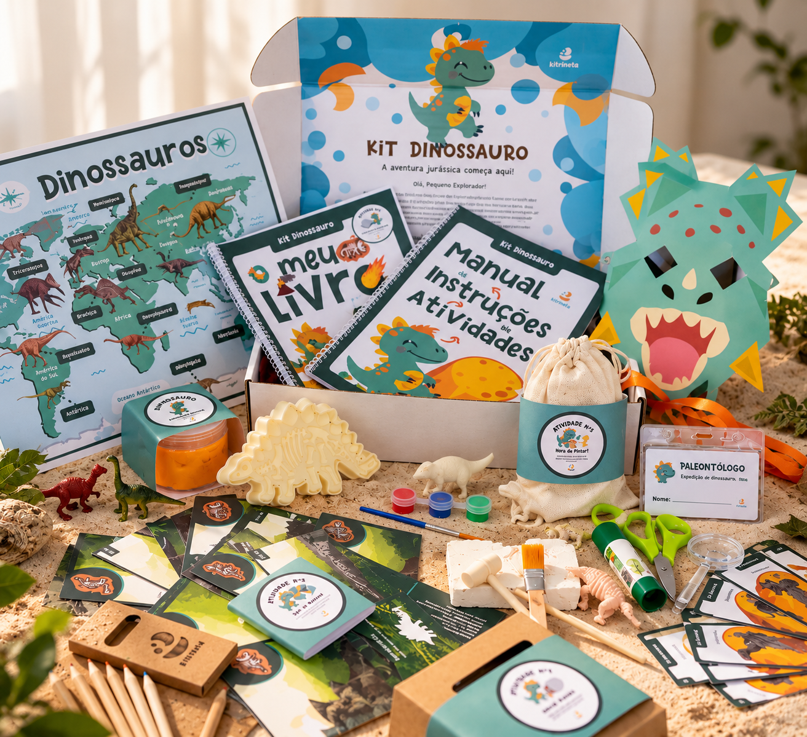
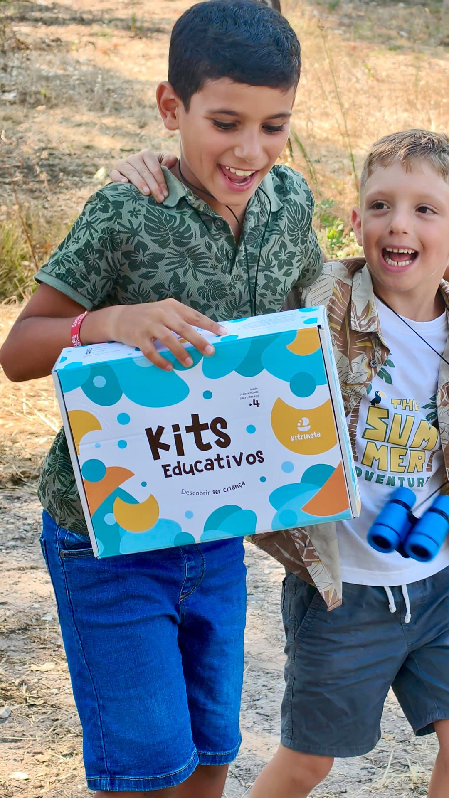
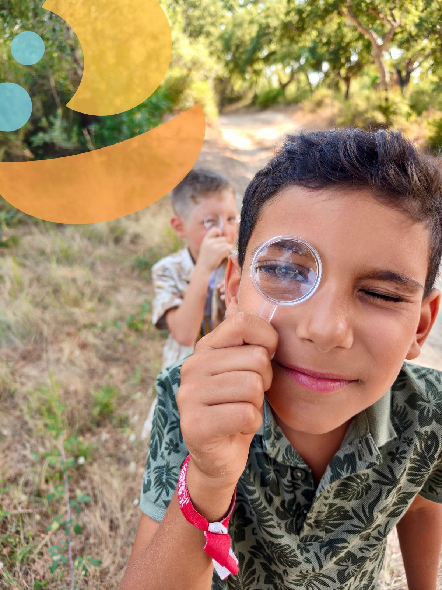
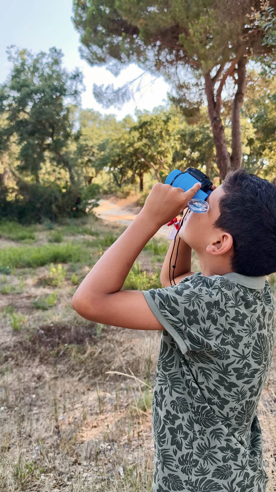
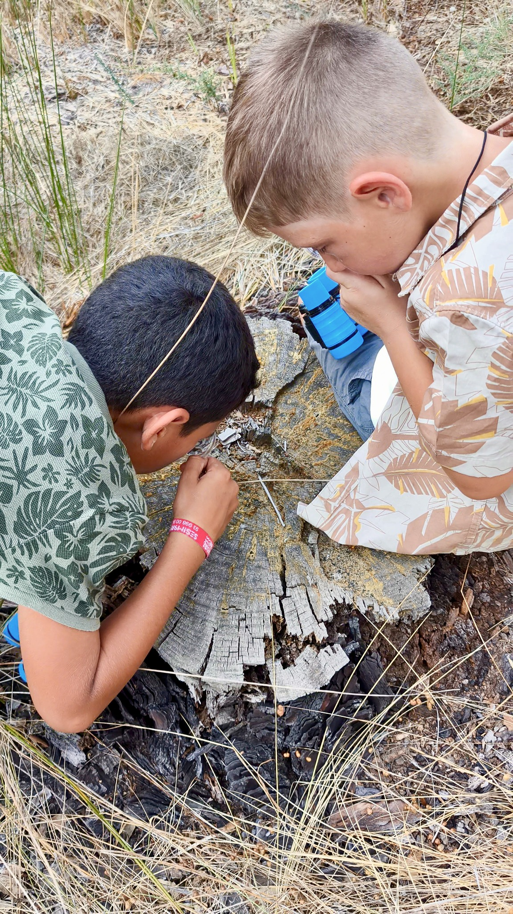
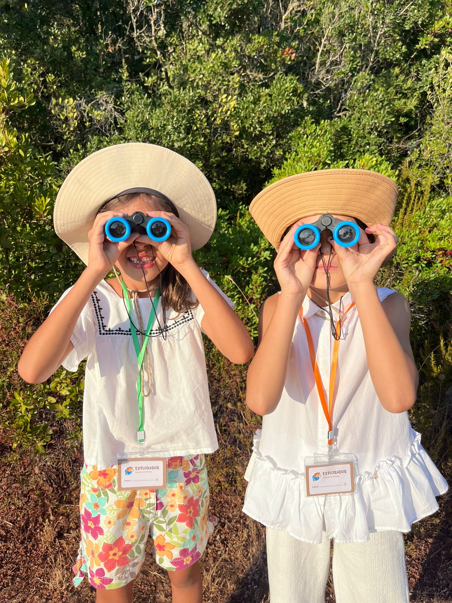

A partir dos 4 anosPALEONTOLOGIA • CRIATIVIDADE
Kit Dinossauro
Viaja ao passado, investiga fósseis e entra no fascinante mundo dos dinossauros.
TEMPO PARA SER CRIANÇA
Kits educativos que transformam curiosidade em aventura — para brincar, descobrir e aprender longe dos ecrãs.

Conteúdos, materiais e atividades pensados para despertar a curiosidade.

A partir dos 4 anosPALEONTOLOGIA • CRIATIVIDADE
Viaja ao passado, investiga fósseis e entra no fascinante mundo dos dinossauros.
 A partir dos 4 anos
A partir dos 4 anosNATUREZA • DESCOBERTA
Binóculos, atividades e ferramentas para observar, investigar e descobrir a natureza.

APRENDER FAZENDO
A Kitrineta convida as crianças a observar, experimentar, questionar e criar. Cada atividade foi pensada para transformar a aprendizagem numa experiência que se vive.
FORA DA CAIXA
Explorar uma árvore, procurar pistas, observar ao longe ou registar uma descoberta. É assim que uma tarde se pode transformar numa aventura.



MOMENTOS ESPECIAIS
Jogos, criatividade, pinturas faciais, caça ao tesouro, atividades temáticas e muito mais.
Planear uma festa →A NOSSA HISTÓRIA
Na Kitrineta acreditamos que aprender não tem de parecer uma obrigação. Criamos experiências que dão espaço à curiosidade, à autonomia e à imaginação — porque descobrir também é ser criança.